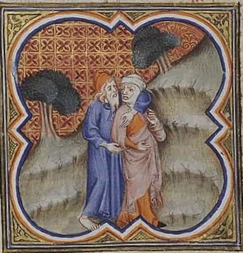

< < < Back
The Legacy Of Gomer And Hosea Lives On – Return Of Kings
The Hebrew Bible story of Hosea and the “harlotry” of his wife Gomer bear immense significance in today’s times. Hosea 1:2 refers to Gomer (the daughter of Diblaim), alternatively as a “promiscuous woman” (NIV), a “harlot” (NASB), and a “whore” (KJV) but Hosea is told to marry her according to a divine command.
Background
The prophet Hosea is recognized as one of the greatest prophets of the eighth century B.C., along with Amos, Micah, and Isaiah. Hosea, both by his life and preaching, taught vital truths about the love of God. He was a prophet of the Northern Kingdom during and after the reign of Jeroboam II, and was the only writing prophet from the Northern Kingdom of Israel (Amos came from Judah and preached in the North). When he began his ministry, shortly after Amos, both kingdoms were at the height of their power and prosperity. According to the Book of Hosea, Hosea was then commanded by God to marry a “prostitute” (the meaning of the word “prostitute” itself here could carry many meanings).
The New Jerusalem Bible reads “Yahweh said to Hosea, ‘Go, marry a whore, and get children with a whore; for the country itself has become nothing but a whore by abandoning Yahweh’” (Hos. 1:2 NJB). The issue of whether Gomer’s whoredom was literal or spiritual has often been a contentious topic of debate with scholars, as well as the story of Hosea is often a naturally difficult subject for a number of people (especially men) to deal with.
The real lesson to be learnt is about the spiritual adultery (idol worship) of a nation which abandons God and falls into evil— represented by the adultery and harlotry of Gomer. In this case it’s forgiven by God, represented by Hosea’s forgiveness and magnanimity towards Gomer, as commanded by God. Hosea’s sacrifice of personal honor for following divine commands represent some of the bitterest pills that a noble and honorable man could ever swallow.

Hosea and Gomer’s story should not be viewed superficially as the general condonance of female infidelity by men—to be made later as a social role model—because Hosea was specifically following divine commands in relation to Gomer, as his wife was to represent a spiritual theme of a nation turning away from God. He wouldn’t have married or forgiven her had he not been divinely commanded at first. This command thus does not pertain to mankind on the whole.
Another similar example often misconstrued by feminists to condone modern female sexual immorality is the example of Jesus forgiving the adulterous woman. This example is often abused by modern women to justify their sluttiness/whoring without taking into consideration the warning which Jesus gave the woman in parting, “Go and sin no more”, a commandment which modern slutty women often hypocritically ignore to continue their sluttiness, while continuing to abuse Jesus’s “Let he who is without sin cast the first stone” statement, to preclude judgment for their own sexual immorality.
Fast forward to modern times
The spirit of Gomer didn’t die. It can be seen in modern feminist societies, which have given women indulgences to openly emulate her example and embody her through deed with social permission to spite both men and patriarchy through the platform of feminism today.
Hosea’s example also lives on in cases of modern men choosing to marry whores, and those men choosing to condone spousal infidelities within marriages, often out of ‘undying love’. But the tragedy here is Hosea’s example has been misconstrued to both exploit and demean men in the context of such relationships by cheating women and permissive modern society to increasingly devalue male territorial instincts and self-respect.
Gomer’s legacy – fictional fact or factual fiction?
In modern feminist societies, you have an emerging trend of men marrying former escorts or prostitutes (along with a more common trend of men marrying sluts), and the social acceptance of it. While Hosea was commanded to marry an adulterous woman due to a divine command, some modern men often choose a similar decision out of own free will or due to modern social conditioning.
But Gomer’s legacy also lives on in marital infidelity, the result being surprising enough to show that modern women don’t lag behind men in the “cheating” department as otherwise thought, just like how Gomer continued to shamelessly cheat on Hosea.
Female infidelity has itself become a rampant disease requiring proper analysis to avoid. What could be the reasons? Affluent lifestyles as compared to our predecessors with increasing financial gender equality? Or simply more gender interaction, both in actual and virtual reality?
Nevertheless, the defining feature in these trends of marital infidelity is that women’s greatest strength and men’s greatest weakness in the game of cheating is often the human mouth, or secretiveness. Men typically can’t stop boasting about sexual conquests, while women are simply better at lying and keeping sexual secrets. Thus the real figures of female infidelity may itself be much more than actually polled.
Trust becomes the primary casualty
Naturally, trust takes a beating. Couple that with modern women typically feeling lesser guilt about cheating (with moral responsibility being taken off their shoulders by feminism), as compared to men.
Thus, modern man’s distrust of women is a male psychological reaction primarily elicited by the decadence of feminist society.With modern society even turning against men for showing natural territorial jealousy in relationships, the misandry bubble in society further concretes into a formidable monster that modern men often find more difficult to come to terms with.
The crime of paternity fraud
Paternity fraud is an offense (realistically speaking, a crime) to cuckold men and deceive children, committed by only one guilty gender—the female one. Of course modern men won’t name their children as Lo-ammi (“Not mine”), like Hosea—even if they suspect potential paternity fraud—so the only recourse they have is parental testing, a modern technological adaptive solution available to men.
Though banned in some places if conducted secretly, and illegal without consent of both parties, many men—fearful of cuckolding—bypass this by traveling to countries where testing is still available to ascertain paternal surety. With more instances of cuckolding rising in modern times, and men being increasingly unnaturally socially conditioned into becoming cuckolds, some men sometimes even choose the option of suicide.
The plight of modern men
Men forgiving (and living with) their wives’ infidelities characteristically live a soulless existence of self-deception. One of the greatest self-deceptions a man can do to himself is assuming that his cheating partner will “change”. In reality, it’s actually circumstances which usually change in life; whereas people don’t.
The forgiving husband of the cheating wife only sets himself up for further disappointments, because he undermines his own authority and self-respect in her eyes, while choosing to erroneously display forbearance towards her. Or some men correctly choose to end the relationship. But the sad truth is that men tend to always blame other men for their women’s cheating, another dysfunctional feminism fueled social construct, which brainwashes men into believing that both women’s (and men’s) cheating are due to men alone.
No one can “steal” sex from a woman to make her cheat on her man (unless by rape). Cheating is solely a mutual decision taken out of personal free will.
Gomer lives on
Thus, the Biblical story of Hosea and Gomer bears immense credence in today’s modern societies which promote a culture of cuckolding, whore-wifing, and female infidelity permissiveness. With feminism often playing God in modern social gender interaction, and with modern men often choosing to act like Hosea whether by will or social conditioning, Gomer’s legacy thus thrives with gay abandon.
Read More: The Rising Epidemic Of Cheating Wives Who Want “Freedom”


{kind=link}
{kind=link}
{kind=link}
{kind=link}
{kind=link}
{kind=link}